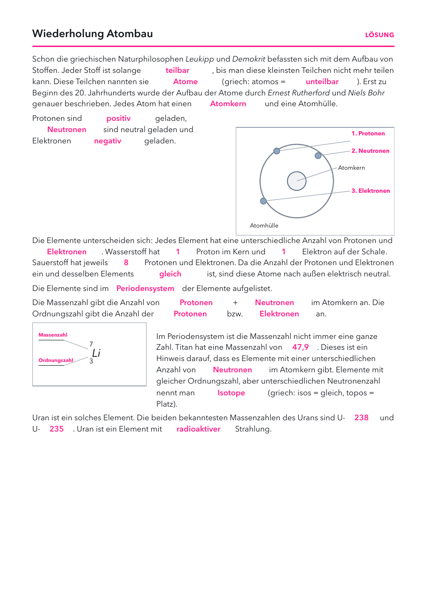

- Arbeitsblatt Wiederholung Atombau: Seite 1, eins pro Schüler.
- Folien und Lösungen: nicht drucken.
Material
Demo (für dich)
| Material | Anzahl | Hinweis |
|---|---|---|
| nicht nötig | ||
Schülerversuch (pro Gruppe)
| Material | Anzahl | Hinweis |
|---|---|---|
| Periodensystem | 1× | aus dem Chemiebuch oder als Kopie |
Die Stunde
1 · Einstieg
2 · Größen
3 · Vorwissen
1
Einstieg
Stadion und Erbse, Leitfrage 1, Vermutungen.
Stadion und Erbse, Leitfrage 1, Vermutungen.
2
Größen
Wie klein ist ein Atom? Zoom im Atomlabor.
Wie klein ist ein Atom? Zoom im Atomlabor.
3
Vorwissen
Arbeitsblatt Wiederholung Atombau.
Arbeitsblatt Wiederholung Atombau.
Folie 1
Beobachte
Fast das ganze Atom ist leer. Trotzdem steckt im winzigen Kern fast die gesamte Masse.
Folie 2
Leitfrage 1
Woraus besteht Materie?

Was vermutest du? Wir sammeln eure Vermutungen.
Folie 3
Wie klein ist ein Atom?
| Gegenstand | Größe | zum Vergleich |
|---|---|---|
| Haar | etwa 0,1 mm dick | Nebeneinander passen etwa eine Million Atome darauf. |
| Bakterie | etwa 0,001 mm | Im Lichtmikroskop gerade noch zu sehen. |
| Atom | etwa 0,000 000 1 mm | Kein Lichtmikroskop kann es zeigen. |
| Atomkern | etwa 100 000-mal kleiner als das Atom | Fast die ganze Masse steckt darin. |
Frage: Wie viele Atome liegen nebeneinander auf der Dicke eines Haars?
Folie 4 · Schülerblatt mit Lösung
📄 Arbeitsblatt austeilen: Vorwissen aus Chemie

Größenordnungen
- Atomdurchmesser etwa 10⁻¹⁰ m, Kerndurchmesser etwa 10⁻¹⁵ bis 10⁻¹⁴ m. Das Verhältnis liegt bei 10 000 bis 100 000.
- Fast die gesamte Masse steckt im Kern. Ein Proton ist rund 1800-mal so schwer wie ein Elektron.
- Der Nachweis kam mit Rutherfords Streuversuch (1909 bis 1911): Fast alle α-Teilchen fliegen durch eine Goldfolie, nur sehr wenige prallen zurück. Im Atomlabor als Simulation.
- Typische Fehlvorstellungen: Das Atom ist eine volle Kugel. Elektronen kreisen auf festen Bahnen wie Planeten. Atome kann man mit dem Mikroskop sehen.
Vorwissen aus Chemie
- Das Arbeitsblatt holt das Schalenmodell und das Periodensystem aus Klasse 8 und 9 zurück. Lücken zeigen, was in der nächsten Stunde noch einmal kommen muss.
Atomlabor
Labor öffnenZoom vom Atom auf den Kern, Rutherfords Streuversuch mit Teilchenzahl-Regler, Atom bauen, Isotope.